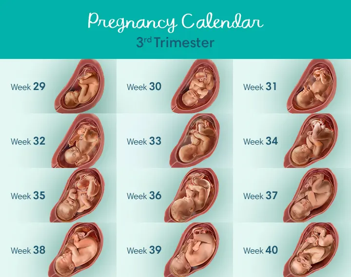

Third Trimester Development
Early in your third trimester, your baby may begin to recognize the sound of your and your partner’s voices. There will be a lot of moving during the third trimester. You should be able to feel about 10 movements per hour. Babies begin “practicing” breathing during the third trimester by moving their diaphragm. You may find that your baby gets the hiccups from time to time.
During the final few weeks before birth, your baby will gain a good deal of his or her weight. By week 33, your baby is in position for delivery, ideally with his or her head resting on your cervix. The bones harden and the skin becomes thicker. By 34 weeks, your baby would be able to survive outside of your womb without extensive medical intervention, although oxygen therapy may be needed.
Beginning at week 35, your baby will grow rapidly, gaining 1/2 -3/4 pound per week. Babies are considered to have grown to “full-term” by week 37. But, your baby will continue to grow and gain weight, and will most often be delivered between weeks 38 and 42. Your baby will weigh an average of 7.5 pounds at birth and measure about 20-22 inches long.
A pregnancy that goes beyond 42 weeks is considered past the due date. At this time, the doctor may induce labor. If your pregnancy has gone beyond 40 weeks, be sure to talk to your doctor.
Once you reach the third trimester of pregnancy, you’re well over half way there. As you look forward to the birth of your baby, there is plenty to plan for and decisions to make. You might find you’re slowing down, or you might be filled with energy to clean, tidy and organise as you prepare for your baby’s arrival. This urge to clean is known as the ‘nesting’ instinct.
Pregnancy is divided into 3 blocks of 3 months each – the first, second and third trimesters. Reaching week 27 of your pregnancy means you’re now in the third and final trimester. While this trimester could end at week 40, in reality it ends whenever your baby is born.
A baby is considered to have been born full-term if it is born in weeks 37 to 42 of pregnancy. A baby born before week 37 is considered premature, and if your baby has not been born by week 42, labour may be induced.
What happens to your body?
As you get closer to the time your baby will be born, here are some things you’ll notice:
Your skin and ligaments continue to stretch to accommodate your growing baby.
You get tired easily, and sleeping becomes more difficult.
You experience heartburn and/or breathlessness, as the baby grows in your abdomen.
While these are all part of a normal pregnancy, you can take steps to minimise discomfort. Speak with your doctor or midwife for suggestions, particularly if you are in pain.
You may also experience Braxton-Hicks contractions, which are a tightening of the muscles of the uterus. They last around 30 seconds, are irregular and not painful. They are not labour contractions, and not a sign that labour has begun.
If this is your first baby, you may notice around 36 weeks that your baby has moved further down into your pelvis. This is often referred to as 'the baby has engaged or dropped'. You will notice more room near your ribs and breathing will become easier, but this also adds more pressure on your bladder (meaning more trips to the toilet).
In the last few weeks of this trimester your body begins to prepare for the coming labour. The cervix begins to soften, and many women notice a ‘show’. The ‘show’ is the release of the mucous plug that sits within the cervical canal during pregnancy, and is an early sign that your labour will soon begin.
Your emotions
During this last stage of pregnancy, you may be worried or anxious about labour and the birth, or about how you will manage as a parent.
Difficulty getting comfortable in bed and frequent bathroom visits can mean poor sleep, which is known to trigger irritability and low mood in some people.
Although most pregnant women see the third trimester as an exciting time and feel positive about the next stage, one in 5 will experience antenatal anxiety or depression. Seek help early if this is how you (or your partner) are feeling.
What happens to the baby?
By week 31, your baby’s lungs are more mature, but are yet to produce surfactant, a substance that helps with breathing once they are born.
By week 36, your baby is about 47cm long and weighs approximately 2.6kg. Your baby’s head may start to engage or sit lower into your pelvis at this time, getting ready for labour. Around one in 25 of all babies will be in the ‘breech position’, rather than the usual head-down position, at the start of labour. If this is your situation, your doctor or midwife will discuss with you what this means for your labour, what your options are and how your baby might be born.
By 40 weeks, your baby will be about 50cm, and weigh approximately 3.4kg. Developmentally, your baby is now ready to be born.
What to expect with your doctor or midwife?
Through the third trimester you will have frequent antenatal check-ups: about every 4 weeks until 36 weeks, then every 2 weeks after that.
If you haven’t already had them, the following may be offered:
- gestational diabetes check
- strep (streptococcal) B check
- whooping cough (pertussis) vaccination
- flu (influenza) vaccination
How to stay healthy
To give your baby a healthy start, it’s important to eat healthy foods throughout pregnancy. Ensure your diet is varied and includes a range of fresh fruit and vegetables as well as sources of protein, iron and calcium. Don’t forget to drink plenty of water too.
Weight gain is a normal part of pregnancy and most women can expect to gain between 11 and 16kg.
A pregnancy weight gain calculator can be a handy tool to track your weight gain through the third trimester.
Try to stay active throughout pregnancy - even in your third trimester. While it's important to stick with safe, gentle exercise as you get closer to your due date, recommendations state that pregnant women without complications are encouraged to participate in regular exercise as part of a healthy lifestyle.
Things to consider
As you enter the third trimester don’t forget to:
- pack a hospital bag
- book a hospital/birthing centre tour
- arrange a properly-fitted car seat (to bring your baby home)
- consider what you will need when you bring your baby home – what will you buy, can you borrow from family or friends?
- if you have other children (or pets), plan for their care while you are in hospital
- consider shopping ahead – especially for non-perishable staples (tinned foods, bathroom products, etc.)
- cook double portions through your third trimester, and load your freezer for when things get busy once the baby is born
